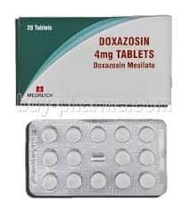

Doxazosin

- Alpha Adrenergic Blocker အမျိုးအစားဝင် ဆေးတစ်မျိုး ဖြစ်ပါတယ်။
- သွေးပြန်ကြော၊ သွေးလွှတ်ကြောတွေကို ဖြေလျော့စေပြီး သွေးလွယ်လွယ်ကူကူစွာ စီးဆင်းဖို့ လုပ်ဆောင်ပေးပါတယ်။
- ဆီးကြိတ်နဲ့ ဆီးအိမ်ပြွန် ကြွက်သားတွေကိုလည်း ဖြေလျော့စေပြီး ဆီးသွားရ ပိုမိုလွယ်ကူအောင် ဆောက်ရွက်ပေးပါတယ်။
ဘယ်မှာသုံးလဲ
သွေးတိုးရောဂါ
ဆီးကြိတ်ကြီးခြင်းရောဂါ
တချို့ အမျိုးအစားတွေ (Cardura XL) ကိုတော့ ဆီးကြိတ်ကြီးတာအတွက်သာ အသုံးပြုပါတယ်။
ဘယ်လို သုံးရမလဲ
- ဆရာဝန် ညွှန်ကြားချက်ရှိမှသာ သုံးသင့်ပါတယ်။
- ဆေးပမာဏကို တိကျစွာသုံးပါ။
- သောက်ဆေး အနေနှင့် အသုံးပြုပါတယ်။
- သွေးတိုးရောဂါအတွက် အသုံးပြုနိုင်ပြီး ရောဂါလက္ခဏာ သက်သာသွားတဲ့အခါ ဆရာဝန်ညွှန်ကြားချက် မပါဘဲ မိမိသဘောနဲ့ မိမိမရပ်လိုက်ပါနဲ့။
- စိုထိုင်းဆမများဘဲ အပူချိန်မမြင့်တဲ့ နေရာမှာထားသိုပါ။
ဘေးထွက် ဆိုးကျိုးဘာတွေရှိလဲ
- ဆေးနှင့်ဓာတ်မတည့်သောလက္ခဏာများ(ရောင်ရမ်းယားယံခြင်း၊ အသက်ရှူရခက်ခြင်း)
- ရင်ဘတ်အောင့်ခြင်း
- အသက်ရှူကြပ်ခြင်း
- ဗိုက်အောင့်ခြင်း
- မူးဝေခြင်း
- အမျိုးသားများတွင် လိင်တံမာကြောပြီး နာကျင်ခြင်း စတာတွေ ခံစားရနိုင်ပါတယ်။
ဘာတွေ သတိထားရမလဲ
မျက်လုံးသူငယ်အိမ် အပေါ် သက်ရောက်မှုရှိတာကြောင့် မျက်လုံးခွဲစိတ်မှု မလုပ်မီ ဆရာဝန်ကို ဆေးသောက်နေရင် ကြိုတင်အသိပေးပါ။
ဒီဆေးနဲ့ အလားတူဆေးတွေ (Prazosin, Silodosin) စတာတွေနဲ့ မတည့်ရင် ဒီဆေးနဲ့လည်း ဓာတ်မတည့် တာမျိုး ဖြစ်နိုင်သောကြောင့် အသုံးပြုရင် သတိထားပါ။
စအသုံးပြုခါစမှာ သွေးပေါင်ကျ မူးဝေနိုင်တာကြောင့် အထိုင်အထ ဂရုစိုက်ပါ။ အချိန်အကြာကြီး မတ်တပ် ရပ်ခြင်း၊ ထိုင်နေရာမှစုတ်တရက်မတ်တပ်ရပ်ခြင်းတို့ ရှောင်ကြဉ်ပါ။
သွေးဖိအား မကြာခဏ ကျတတ်ခြင်း၊ အသည်းရောဂါ၊ ဝမ်းချုပ်ခြင်း၊ အစာခြေလမ်းကြာင်းဆိုင်ရာ ပိတ်ဆို့တဲ့ရောဂါတွေ ရှိရင်ဆရာဝန်ကို အသိပေးပါ။
ကိုယ်ဝန်ဆောင်တွေမှာ ဆေးအသုံးပြုဖို့ အကြောင်းရင်းခိုင်လုံမှ ဆရာဝန်ညွှန်ကြားချက်အတိုင်း အသုံးပြုသင့်ပါတယ်။
ဆေးအာနိသင် ဘယ်လိုရှိလဲ
- ဆီးဆေးများ၊ သွေးတိုးရောဂါအတွက်သုံးတဲ့ တခြားဆေးတွေနဲ့ အပြန်အလှန်သက်ရောက်မှု ရှိနိုင်ပါတယ်။
- ပိုးသတ်ဆေးများ
- စိတ်ကျရောဂါအတွက်ဆေးများ
- HIV ပိုးအတွက်သုံးသောဆေးများ
- အမျိုးသားပန်းသေပန်းညှိုးခြင်း အတွက်သုံးသောဆေးများ စသည်တို့ တစ်ခုခုအသုံးပြုနေရင် ဆရာဝန်ကို ပြောပြထားပါ။
ဆေးသောက်လွန်ရင် ဘာတွေဖြစ်မလဲ
- မူးဝေခြင်း
- မူးမေ့လဲခြင်းတို့ ဖြစ်နိုင်ပါတယ်။
- ဆေးရုံဆေးခန်းအမြန်သွားရောက်ရန်လိုပါတယ်။
- ဆေးတွေကို ဘယ်ဆေးမဆို ဆရာဝန် ဒါမှမဟုတ် တတ်ကျွမ်းနားလည်တဲ့ ကျန်းမာရေးဝန်ထမ်းတွေရဲ့ ညွှန်ကြားချက်အတိုင်း တိတိကျကျ သောက်သင့်ပါတယ်။
- မိမိသဘောနဲ့ဆေးရပ်လိုက်တာမျိုး မလုပ်သင့်ပါဘူး။
- ဘေးထွက်ဆိုးကျိုး ပြင်းပြင်းထန်ထန် ခံစားရရင်တော့ ဆရာဝန်နဲ့တိုင်ပင်ဖို့ လိုအပ်ပါတယ်။
Source– ဒေါက်တာချစ်စန္ဒီကျော်